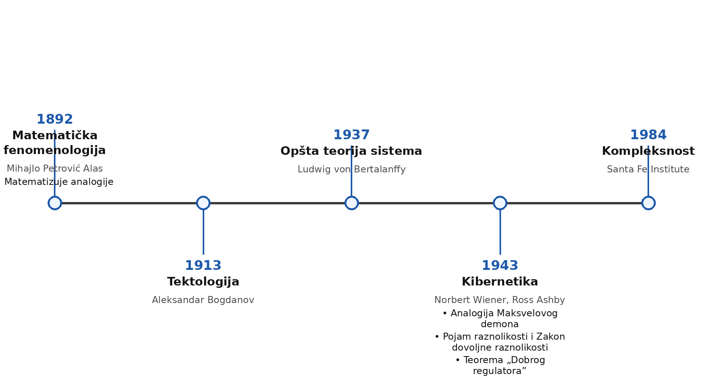
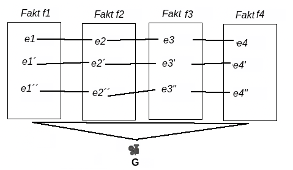
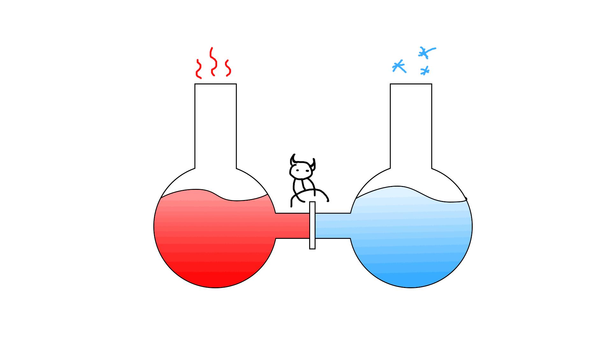

Created: 2026-03-22 Sun 13:53
Biblioteka je groblje umova - Božidar Knežević, Misli, 335



https://pmackic.itch.io/maksvelov-demon
Sistem - set varijabli izabranih za posmatranjem
Raznolikost - Broj stanja koje sistem može da zauzme
Zakon Dovoljnih raznolikosti - Samo raznolikosti apsorbuju raznolikosti
EIP 🔮:
Možemo: 1 → 2
https://github.com/Pmackic/proc